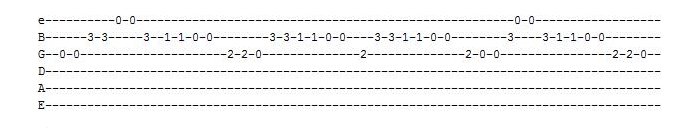
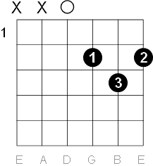
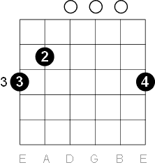
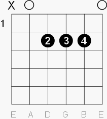

Lectia de chitara
Date generale
 Spre deosebire de pian, unde fiecare sunet are o singura clapa, chitara are 6 corzi, dispuse in paralel. De sus in jos, corzile emit notele mi, la, re, sol, si, mi. Aceste corzi sunt dispuse deasupra gatului chitarei, numit si grif.
Spre deosebire de pian, unde fiecare sunet are o singura clapa, chitara are 6 corzi, dispuse in paralel. De sus in jos, corzile emit notele mi, la, re, sol, si, mi. Aceste corzi sunt dispuse deasupra gatului chitarei, numit si grif. Griful chitarei este impartit de mici benzi de metal, spatiul dintre oricare doua numindu-se fret sau tasta, numerotate de la 1 in sus, incepand de la capul chitarii.
Apasand pe un anumit fret, intalimea sunetului emis de acea coarda creste cu un semiton. Acest lucru se datoreaza unui principiu descoperit de Aristotel, conform caruia inaltimea unei corzi este invers proportionala cu lungimea ei. Astfel, apasand pe fret, adica scurtand lungimea corzii, sunetul devine mai inalt. Cu cat mergem pe freturi mai departate, cu atat sunetul devine mai intalt. De exemplu, apasand pe primul fret al corzii mi, sunetul emis de aceasta este sunetul fa (mi + 1st). Apasand pe fretul 3, sunetul emis este sol (mi + 3st).
Plasarea degetului
Multi incepatori intampina dificultati deoarece nu apasa coarda in mod corect. Conform figurii de mai jos, cel mai indicat este sa folositi partea marcata cu galben, uneori cea albastra, insa niciodata cea cu rosu.

Postura corecta
Dacă doriți să cantati la o chitara clasică, utilizați postura clasică (puneți chitara pe același picior ca mâna stanga). Dacă nu, folositi calea "normală" și plasați-o pe același picior ca și mâna dreapta.
Pozitia degetelor
Asemanator ca la pian, fiecarui degete de la mana stanga (cu exceptia degetului mare, care va juca un rol in suportul gatului chitarei) ii este atribuit un numar de la 1 la 4, incepand de la degetul aratator la cel mic, ca in figura de mai jos.
Exista doua moduri de baza in care se poate canta la o chitara, asemanator ca la pian: pe note sau pe acorduri.

Note & tab-uri
Pentru a canta pe note se foloseste un "tab"(tabulatura), care indica in ordine fretul ce trebuie apasat pe coarda specifica. Aici este un exemplu destul de simplu, tot ce trebuie sa faci este sa urmezi notele care se canta. S-ar putea sa fie putin mai dificil la inceput, din moment ce e nevoie de putin exercitiu si pentru ca tabulaturile nu iti ofera date referitoare la durata notei.
Acorduri

Acordurile presupun o grupare de cel putin 3 note, ceea ce vom incerca sa facem aici prin intermediul celor 6 corzi. De exemplu acordul Re Major are nevoie de notele re, fa# si sol. Alaturi se afla o diagrama care ne va ajuta sa cantam orice acord.O coarda se poate afla in 3 stari:
- Nefolosita: marcata cu un X la inceputul diagramei, aceasta coarda nu se va canta
- Libera: marcata cu un O la inceputul diagramei, aceasta coarda se va canta fara a se apasa vreun fret.
- Apasata: dupa cum ii spune si numele, aceasta coarda este o coarda ce este apasata pe un anume fret. Pe langa folosirea unui cerc pe fretul ce trebuie folosit, acesta include si un numar care indica degetul de la mana stanga ce trebuie folosit
Alte doua exemple de acorduri sunt cele de alaturi, anume Sol Major si La Major.

